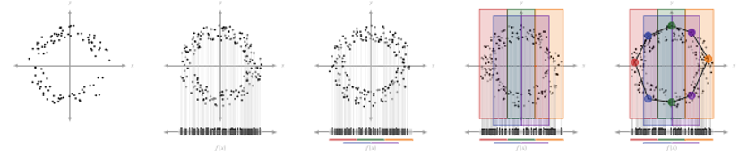
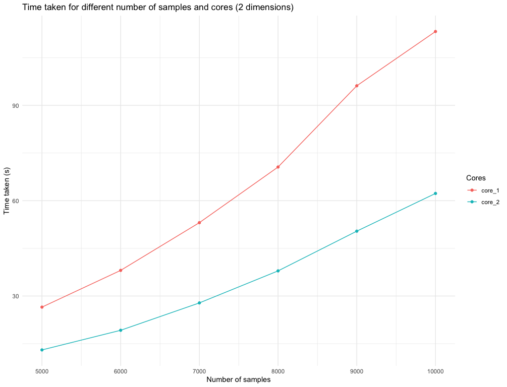
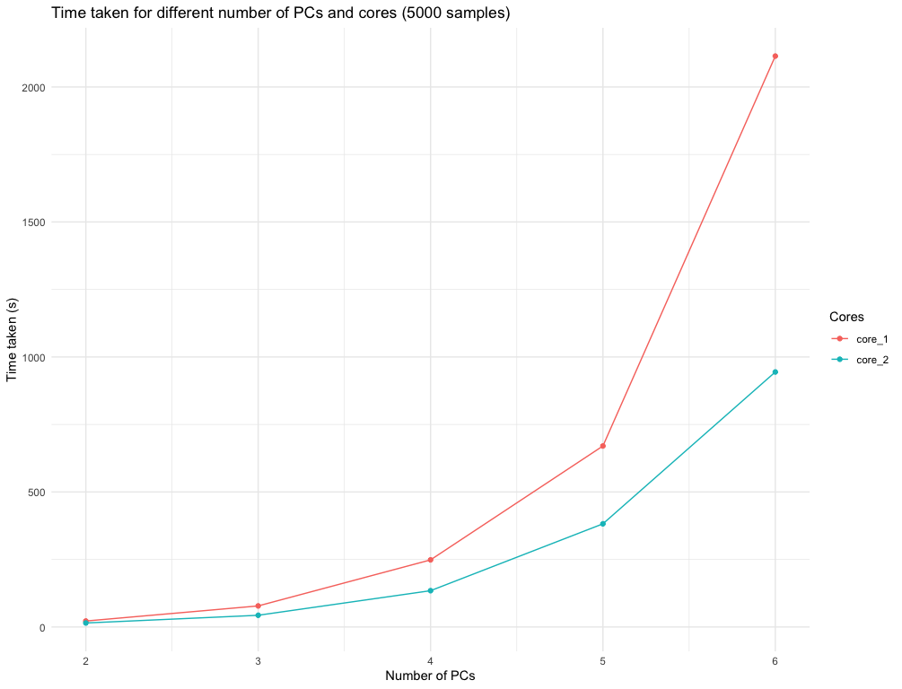

1 MapperAlgo
The Mapper construction turns a point cloud into an interpretable graph. A filter (or lens) maps observations to a low-dimensional space, an overlapping cover divides that space into level sets, and observations are clustered independently inside every level set. Each cluster becomes a vertex; two vertices are joined when they contain at least one common observation.

1.1 Installation and a minimal example
Use the installed package for ordinary analysis. During package development, pkgload::load_all("../../MapperAlgo") may replace library(MapperAlgo) when this document is run from Document/vignettes.
library(MapperAlgo)
X <- scale(iris[, 1:4])
lens <- prcomp(X)$x[, 1:2]
mapper <- MapperAlgo(
original_data = X,
filter_values = lens,
intervals = 6,
percent_overlap = 30,
methods = "kmeans",
method_params = list(max_kmeans_clusters = 3),
cover_type = "stride",
num_cores = 1
)original_data is used for within-level-set clustering, whereas filter_values defines the cover. Supply exactly one of intervals and interval_width: the package computes the other quantity. For a multidimensional lens, a product cover is formed across its columns.
1.2 Covers and level-set indexing
cover_type = "stride" uses intervals of width \(w\) whose starting positions differ by \(w(1-p/100)\). cover_type = "extension" places width-\(w\) anchors without overlap, then extends each boundary by \(wp/200\). In both cases, percent_overlap is entered as a percentage such as 30, not as 0.30.

cover_points() returns the row indices inside one rectangular level set. Internally, to_lsmi() converts a flat level-set index into its coordinate-wise multi-index, and to_lsfi() performs the inverse conversion. These helpers allow a product cover to be traversed with one loop while preserving its multidimensional location.
1.3 Clustering within level sets
The methods argument selects one of four implemented methods. The corresponding controls belong in method_params.
methods value |
Principal controls | Behaviour |
|---|---|---|
"hierarchical" |
method, num_bins_when_clustering |
Cuts a hierarchical tree at the first empty distance-histogram bin. |
"kmeans" |
max_kmeans_clusters |
Searches up to the requested number of centres; the default maximum is two. |
"dbscan" |
eps, minPts |
Excludes observations labelled as noise when positive clusters exist. |
"pam" |
num_clusters |
Uses partitioning around medoids and caps the requested count below the local sample size. |
Independent level sets are processed by a PSOCK worker pool controlled by num_cores. Cover construction, worker start-up, and graph assembly remain outside that parallel loop.
1.4 The returned Mapper object
MapperAlgo() returns an object of class Mapper. FuzzyMapperAlgo() and GMapperAlgo() use the same core representation and add their own class and input parameters.
| Field | Meaning |
|---|---|
adjacency |
Symmetric, zero-diagonal vertex adjacency matrix. |
num_vertices |
Number of clusters, hence Mapper vertices. |
level_of_vertex |
Level-set index from which each vertex was produced. |
points_in_vertex |
Original observation indices assigned to each vertex. |
points_in_level_set |
Observation indices pulled back into each cover element. |
vertices_in_level_set |
Vertex indices produced by each cover element. |
input_params |
Controls retained for inspection and reproducibility. |
Edges are created when the two lists in points_in_vertex intersect. The adjacency matrix therefore records the nerve of the clustered pullback cover, while the index lists preserve the correspondence to the input data.
1.5 Interactive plotting and PNG export
MapperPlotter() returns a networkD3 widget. Vertex size represents the number of observations, edge weight represents shared observations, and colour can show a majority label, an average numeric label, or a precomputed embedding statistic. Because a widget is HTML rather than a native R graphics object, save it with save_mapper_png().
widget <- MapperPlotter(
Mapper = mapper,
original_data = X,
label = iris$Species,
avg = FALSE,
use_embedding = FALSE
)
save_mapper_png(
widget,
png_path = "./man/figures/IrisMapper.png",
vwidth = 1400,
vheight = 1000,
zoom = 2,
delay = 0.7
)The export uses htmlwidgets and webshot2; a working Chrome or Chromium installation is therefore required for the screenshot step. Once saved, the static PNG can be included in the Posit document without rebuilding the widget.
1.6 MNIST example
Download mnist_train.csv and mnist_test.csv from the MNIST dataset page and place them under PaperExample/Data/MNIST_CSV/. From the PaperExample directory, the following extension to mapper.R saves the graph used here:
source("mapper.R")
mnist_widget <- MapperPlotter(
Mapper = Mapper,
original_data = mnist_sample,
label = labels,
avg = FALSE,
use_embedding = FALSE
)
save_mapper_png(
mnist_widget,
"../Document/vignettes/man/figures/MNISTMapper.png",
vwidth = 1600,
vheight = 1100,
zoom = 2,
delay = 1
)The published page reads the already generated file:

1.7 F-Mapper: a fuzzy learned cover
FuzzyMapperAlgo() replaces the rectangular cover by fuzzy c-means membership functions in the filter space. cluster_n specifies the number of fuzzy cover elements. An observation belongs to cover element \(j\) when its membership exceeds fcm_threshold; if no threshold is supplied, the package uses min(0.1, 1 / cluster_n). The pullback sets may overlap, after which the same clustering and nerve construction used by conventional Mapper is applied.
f_mapper <- FuzzyMapperAlgo(
original_data = X,
filter_values = lens,
cluster_n = 6,
fcm_threshold = 0.10,
methods = "kmeans",
method_params = list(max_kmeans_clusters = 3),
num_cores = 1
)This variant learns cover membership from the observed lens distribution, but fuzzy-cover fitting occurs before the parallel level-set clustering.
1.8 G-Mapper: a Gaussianity-driven cover
GMapperAlgo() accepts a one-dimensional filter. Starting with its complete range, recursive_gaussian_split() applies an Anderson–Darling normality test. A non-Gaussian interval is split with a Gaussian mixture model, and the children are enlarged according to g_overlap; recursion stops when the interval passes the criterion or a safety condition is reached. AD_threshold controls the splitting criterion.
g_mapper <- GMapperAlgo(
original_data = X,
filter_values = lens[, 1],
AD_threshold = 10,
g_overlap = 0.10,
methods = "kmeans",
method_params = list(max_kmeans_clusters = 3),
num_cores = 1
)Cover learning is serial; num_cores parallelises only the independent clustering tasks that follow it.
1.9 Node summaries, conditional probabilities, and grid search
MapperCorrelation() aggregates an observation-level quantity over every Mapper vertex. CPEmbedding() computes node-wise conditional probabilities of the form \(P(B=b\mid A=a)\), which can be passed to MapperPlotter(..., use_embedding = TRUE).
GridSearch() evaluates width–overlap combinations, renders every resulting graph, and saves the PNG files to out_dir. The current implementation uses DBSCAN with eps = 0.3 and minPts = 1 inside the grid search.
1.10 Performance controls
The principal computational controls are num_cores, cover resolution, and clustering parameters. More cover elements produce more independent clustering tasks; greater overlap can repeat observations across more level sets. The package precomputes the point memberships of each vertex and constructs an edge only when two memberships intersect.

